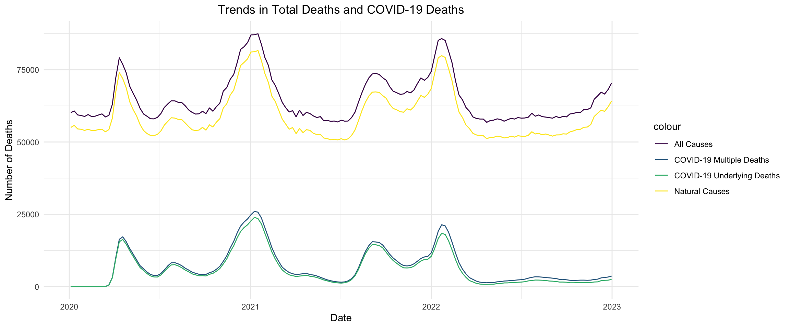

The following content explores the impact of the COVID-19 pandemic on global mortality through a series of hypothesis tests. These analyses aim to uncover key differences in mortality trends, attribute them to COVID-19, and examine potential seasonal variations. Together, they provide insights into the direct and indirect effects of the pandemic on death rates.
From the plot below, we can observe that there appears to be a difference in mortality rates between 2019 and 2021. But is this difference statistically significant? Let’s conduct a hypothesis test to examine this further.
death_by_chapters <- read_delim("data/Provisional Mortality Statistics by Chapter per Year.txt",
delim = "\t", quote = "\"",
col_names = TRUE, show_col_types = FALSE)
death_by_chapters <- death_by_chapters %>%
separate(`Residence Census Region`,
into = c("Census Region Code", "Region"), sep = ":", remove = TRUE) %>%
mutate(`Census Region Code` =gsub("Census Region ", " ", `Census Region Code`)) %>%
select(-c(`Notes`, `Census Region Code`, `Year`)) %>%
rename(
Region_Code = `Residence Census Region Code`,
State = `Residence State`,
ICD_Chapter = `MCD - ICD Chapter`,
ICD_Code = `MCD - ICD Chapter Code`,
Year = `Year Code`,
Deaths_Count = `Deaths`,
Pop = `Population`,
Crude_Rate_per_100k = `Crude Rate`
) %>%
janitor::clean_names()
death_by_chapters <- death_by_chapters %>%
filter(year >= 2018 & year <= 2023) %>%
mutate(rate_per_1000 = (deaths_count / pop) * 1000)
csd_data <- death_by_chapters %>%
filter(icd_code == "I00-I99") %>%
select(state, year, rate_per_1000)plot_ly(
data = csd_data,
x = ~year,
y = ~rate_per_1000,
type = "box",
boxpoints = "all",
jitter = 0.3, # Add some jitter to the points
pointpos = -1.8, # Adjust the position of points
text = ~paste(
"State:", state, "<br>",
"Year:", year, "<br>",
"Rate per 1000:", rate_per_1000
),
hoverinfo = "text"
) %>%
layout(
title = "Mortality Rate of the Circulatory System Disease(I00-I99) per Year",
xaxis = list(title = "Year"),
yaxis = list(title = "Rate per 1000")
)To begin with, we performed the Shapiro-Wilk normality test on the CSD data to assess whether the mortality rates followed a normal distribution. The test yielded a p-value of 0.001, far below the common significance level of 0.05. This result led us to reject the null hypothesis that the data follows a normal distribution, indicating that the mortality rates were likely not normally distributed and may exhibit skewness or kurtosis.
norm_test <- shapiro.test(csd_data %>% pull(rate_per_1000))
norm_test_result <- data.frame(
Model = "Shapiro-Wilk Test",
term = "rate_per_1000",
p.value = norm_test$p.value
)
norm_test_result %>%
mutate(
p.value = ifelse(p.value < 0.001, "<0.001", round(p.value, 3))
) %>%
kbl(
digits = 3,
caption = "Shapiro-Wilk Normality Test Results"
) %>%
kable_styling(bootstrap_options = c("striped", "hover", "condensed"), full_width = TRUE)| Model | term | p.value |
|---|---|---|
| Shapiro-Wilk Test | rate_per_1000 | 0.001 |
Given the non-normality of the data, we employed the Wilcoxon test to investigate whether there was a significant difference in CSD mortality rates between 2019 and 2021. The Wilcoxon test produced a p-value of 1.22×10−61.22×10−6, far below the 0.05 threshold, allowing us to confidently reject the null hypothesis. This result indicates a statistically significant difference in mortality rates between 2019 and 2021, highlighting the profound impact of the COVID-19 pandemic on mortality trends.
wil_test <- wilcox.test(rate_per_1000 ~ year, data = csd_data %>%
filter(year %in% c(2019, 2021)))
wil_test_result <- tibble(
statistic = wil_test$statistic,
p.value = wil_test$p.value
) %>%
mutate(
p.value = ifelse(p.value < 0.001, "<0.001", round(p.value, 3))
) %>%
kbl(
digits = 3,
caption = "Wilcoxon Test Results for Mortality Rates (2019 vs 2021)"
) %>%
kable_styling(bootstrap_options = c("striped", "hover", "condensed"), full_width = TRUE)
wil_test_result| statistic | p.value |
|---|---|
| 575 | <0.001 |
In the test above, we observed a significant difference in mortality rates between 2019 and 2021. What, then, caused this difference? As we know, the COVID-19 pandemic unfolded between 2019 (pre-pandemic) and 2021 (pandemic peak). Also, as shown in the plot below, the trend of COVID-19-related deaths closely mirrors the trends of both total deaths and natural deaths.
weekly_data=read_csv("./data/weekly_deaths_by_state_and_causes.csv")
general_data <- weekly_data |>
janitor::clean_names() |>
rename_with(~ str_replace_all(., " ", "_")) |>
filter(jurisdiction_of_occurrence =="United States") |>
rename_with(~ make.unique(str_replace(., "_\\w\\d.*", ""))) |>
mutate(month = month(week_ending_date)) |>
rename( covid_multiple_cause=covid,
covid_underlying_cause=covid.1,
symptoms_not_classified=symptoms_signs_and_abnormal_clinical_and_laboratory_findings_not_elsewhere_classified
)
ht_data = general_data |>
filter(mmwr_year >= 2020 &
mmwr_year <= 2022) |>
mutate(week_ending_date = as.Date(week_ending_date, format = "%Y-%m-%d"))
ggplot(ht_data, aes(x = week_ending_date)) +
geom_line(aes(y = all_cause, color = "All Causes")) +
geom_line(aes(y = covid_multiple_cause, color = "COVID-19 Multiple Deaths")) +
geom_line(aes(y =natural_cause, color = "Natural Causes")) +
geom_line(aes(y = covid_underlying_cause, color = "COVID-19 Underlying Deaths")) +
labs(title = "Trends in Total Deaths and COVID-19 Deaths",
x = "Date", y = "Number of Deaths") +theme_minimal() +
theme(plot.title = element_text(hjust = 0.5))
As shown in the plot above, the trend of COVID-19-related deaths closely mirrors the trends of both total deaths and natural deaths. This raises an important question: Is COVID-19 responsible for the changes in total and natural deaths? To investigate this, we conducted the hypothesis test below in an attempt to answer this question.
models <- list(
"All Cause vs COVID Multiple Cause" = lm(all_cause ~ covid_multiple_cause, data = ht_data),
"Natural Cause vs COVID Multiple Cause" = lm(natural_cause ~ covid_multiple_cause, data = ht_data),
"All Cause vs COVID Underlying Cause" = lm(all_cause ~ covid_underlying_cause, data = ht_data),
"Natural Cause vs COVID Underlying Cause" = lm(natural_cause ~ covid_underlying_cause, data = ht_data)
)
extract_model_info <- function(model, model_name) {
tidy(model) |>
mutate(Model = model_name) |>
left_join(
confint(model) |>
as.data.frame() |>
rownames_to_column(var = "term") |>
rename(`2.5 %` = `2.5 %`, `97.5 %` = `97.5 %`),
by = "term"
)
}
results = map2_dfr(models, names(models), extract_model_info)
results |>
select(Model, term, estimate, `2.5 %`, `97.5 %`, std.error, p.value) |>
mutate(
p.value = ifelse(p.value < 0.001, "<0.001", round(p.value, 3))
) |>
kbl(
digits = 2,
caption = "Comparison of Regression Models"
) |>
kable_styling(bootstrap_options = c("striped", "hover", "condensed"), full_width = TRUE)| Model | term | estimate | 2.5 % | 97.5 % | std.error | p.value |
|---|---|---|---|---|---|---|
| All Cause vs COVID Multiple Cause | (Intercept) | 56449.09 | 55873.55 | 57024.63 | 291.35 | <0.001 |
| All Cause vs COVID Multiple Cause | covid_multiple_cause | 1.20 | 1.14 | 1.26 | 0.03 | <0.001 |
| Natural Cause vs COVID Multiple Cause | (Intercept) | 50597.60 | 49997.89 | 51197.32 | 303.59 | <0.001 |
| Natural Cause vs COVID Multiple Cause | covid_multiple_cause | 1.20 | 1.14 | 1.26 | 0.03 | <0.001 |
| All Cause vs COVID Underlying Cause | (Intercept) | 57003.83 | 56411.97 | 57595.69 | 299.62 | <0.001 |
| All Cause vs COVID Underlying Cause | covid_underlying_cause | 1.28 | 1.21 | 1.35 | 0.04 | <0.001 |
| Natural Cause vs COVID Underlying Cause | (Intercept) | 51142.45 | 50534.87 | 51750.04 | 307.58 | <0.001 |
| Natural Cause vs COVID Underlying Cause | covid_underlying_cause | 1.29 | 1.21 | 1.36 | 0.04 | <0.001 |
The Impact of COVID-19 Deaths on Total Deaths and Natural Deaths. Whether COVID-19 deaths are considered as one of the multiple causes or as the underlying cause, the relationship between COVID-19 deaths and total deaths as well as natural deaths is highly significant. The effect of covid_underlying_cause (underlying cause) on the death count is slightly larger than that of covid_multiple_cause (multiple cause), indicating that when COVID-19 is listed as the underlying cause, its impact on death counts is more direct and pronounced.
Confidence Interval and Standard Error. The confidence intervals for all estimated coefficients do not contain zero, indicating that the coefficients are statistically significant. Additionally, the small standard errors suggest that the model’s estimates are relatively precise.
Statistical Significance. Each p-value is less than 0.001, indicating that each regression coefficient is statistically significant, showing a strong correlation between COVID-19 deaths and total deaths as well as natural deaths.
Our analysis confirmed that when COVID-19 was identified as the underlying cause of death, its influence on overall mortality rates became more pronounced. These findings emphasize the critical role of the pandemic in shaping mortality patterns and underscore its direct impact on public health.
From the map Explore the changes in COVID-19 deaths (underlying and multiple) over time, we observed that covid-19 Cases seems to accelerate during winter months. The plot below appears to reinforce this observation, so we decided to test its statistical significance
data = read_csv("data/weekly_deaths_by_state_and_causes.csv") %>%
rename(
`Septicemia` = `Septicemia (A40-A41)`,
`Malignant neoplasms` = `Malignant neoplasms (C00-C97)`,
`Diabetes mellitus` = `Diabetes mellitus (E10-E14)`,
`Alzheimer disease` = `Alzheimer disease (G30)`,
`Influenza and pneumonia` = `Influenza and pneumonia (J09-J18)`,
`Chronic lower respiratory diseases` = `Chronic lower respiratory diseases (J40-J47)`,
`Other respiratory diseases` = `Other diseases of respiratory system (J00-J06,J30-J39,J67,J70-J98)`,
`Kidney Disease` = `Nephritis, nephrotic syndrome and nephrosis (N00-N07,N17-N19,N25-N27)`,
`Other Symptoms` = `Symptoms, signs and abnormal clinical and laboratory findings, not elsewhere classified (R00-R99)`,
`Diseases of heart` = `Diseases of heart (I00-I09,I11,I13,I20-I51)`,
`Cerebrovascular diseases` = `Cerebrovascular diseases (I60-I69)`,
`COVID-19 (Multiple)` = `COVID-19 (U071, Multiple Cause of Death)`,
`COVID-19 (Underlying)` = `COVID-19 (U071, Underlying Cause of Death)`
) %>%
janitor::clean_names() %>%
rename(state = jurisdiction_of_occurrence) %>%
mutate(data_as_of = mdy(`data_as_of`),
year = year(week_ending_date),
month = month(week_ending_date)
) %>%
select(state, year, month, mmwr_week, week_ending_date, all_cause: covid_19_underlying)
winter_deaths = data %>%
filter(state == "United States") %>%
mutate(month = month(week_ending_date, label = TRUE), # Extract month name
season = case_when( # Define seasons
month %in% c("Dec", "Jan", "Feb") ~ "Winter",
TRUE ~ "Non-Winter"
)) %>%
mutate(season = factor(season))
# compute a summary table
seasonal_summary <- winter_deaths %>%
group_by(season) %>%
summarize(
total_underlying = sum(covid_19_underlying, na.rm = TRUE),
total_multiple = sum(covid_19_multiple, na.rm = TRUE))
# Visualization: Boxplot
plot = plot_ly(
data = winter_deaths,
x = ~season,
y = ~covid_19_underlying,
type = "box",
boxpoints = "all", # Display individual data points
jitter = 0.3, # Add jitter to spread points
pointpos = -1.8, # Adjust position of points relative to the box
marker = list(color = "blue", size = 5),
line = list(color = "darkblue")
) %>%
layout(
title = "COVID-19 Underlying Deaths by Season",
xaxis = list(title = "Season"),
yaxis = list(title = "COVID-19 Underlying Deaths"),
showlegend = FALSE
)
# Display the plot
plotFirst, we performed a normality check for the outcome variables by creating Quantile-Quantile (Q-Q) plots. Upon examining the plots, we found that the variable is not normally distributed. Therefore, we used the Wilcoxon Rank-Sum Test for analysis.
winter_death_qq_plot=ggplot(winter_deaths, aes(sample = covid_19_underlying)) +
stat_qq() +
stat_qq_line(color = "red") +
ggtitle("Q-Q Plot for COVID-19 Underlying Deaths") +
xlab("Theoretical Quantiles") +
ylab("Sample Quantiles") +
theme_minimal() +
theme(plot.title = element_text(hjust = .5))
winter_death_qq_plotcovid_season_results <- wilcox.test(covid_19_underlying ~ season, data = winter_deaths) %>%
tidy() %>%
select(statistic, p.value, alternative) %>%
mutate(
p.value = ifelse(p.value < 0.001, "<0.001", round(p.value, 3))
) %>%
kbl(
digits = 2,
caption = "Wilcoxon Test Results for COVID-19 Deaths Across Seasons"
) %>%
kable_styling(bootstrap_options = c("striped", "hover", "condensed"), full_width = TRUE)
covid_season_results| statistic | p.value | alternative |
|---|---|---|
| 2553 | 0 | two.sided |
The results suggest a significant difference in COVID-19 deaths between winter and non-winter months. Is this difference solely attributable to cold weather, or could it be influenced by other factors, such as pre-existing conditions and comorbidities (e.g., diabetes, heart disease, respiratory diseases)? Let’s investigate this further!
In the time series analysis, we observed an interesting pattern for diabetes, Alzheimer’s, and heart disease. The winter surge for these conditions appears to be lower in 2023 compared to 2021 and 2022. We hypothesize that this decline is related to the association between these diseases and COVID-19. To verify this, we fit a multiple linear regression model.
mlr_model = lm(
covid_19_underlying ~ diabetes_mellitus + alzheimer_disease + diseases_of_heart,
data = winter_deaths
)
mlr_results <- summary(mlr_model) %>%
tidy() %>%
select(term, estimate,std.error,statistic, p.value) %>%
mutate(
p.value = ifelse(p.value < 0.001, "<0.001", round(p.value, 3))
) %>%
kbl(
digits = 2,
caption = "Multiple Linear Regression Results for COVID-19 Deaths"
) %>%
kable_styling(bootstrap_options = c("striped", "hover", "condensed"), full_width = TRUE)
mlr_results| term | estimate | std.error | statistic | p.value |
|---|---|---|---|---|
| (Intercept) | -15065.51 | 2978.18 | -5.06 | <0.001 |
| diabetes_mellitus | 33.68 | 2.91 | 11.58 | <0.001 |
| alzheimer_disease | 8.03 | 1.38 | 5.83 | <0.001 |
| diseases_of_heart | -4.78 | 0.53 | -9.02 | <0.001 |
The MLR results suggest that diabetes and Alzheimer’s disease are linked to an increased risk of COVID-19-related deaths, while heart disease appears to be associated with a lower risk. The change of covid-19 death during winters could be associated with them. However, further investigation is needed to understand the underlying mechanisms. Regardless, the above hypothesis tests provide valuable insights and ideas for a deeper understanding of COVID-19.